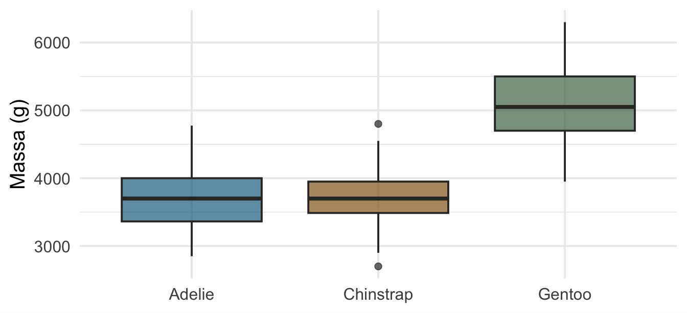
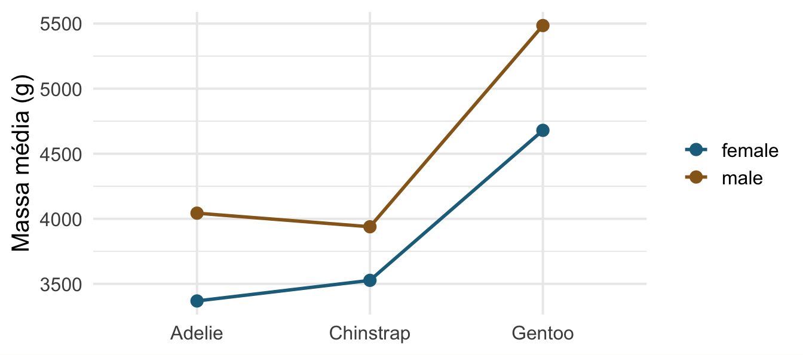
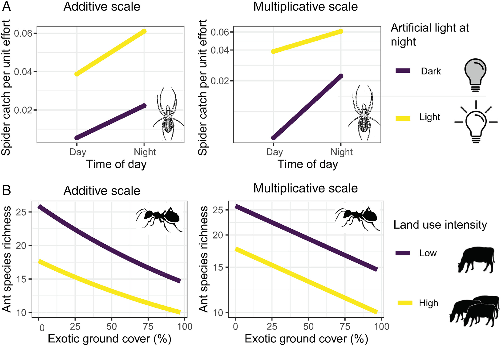
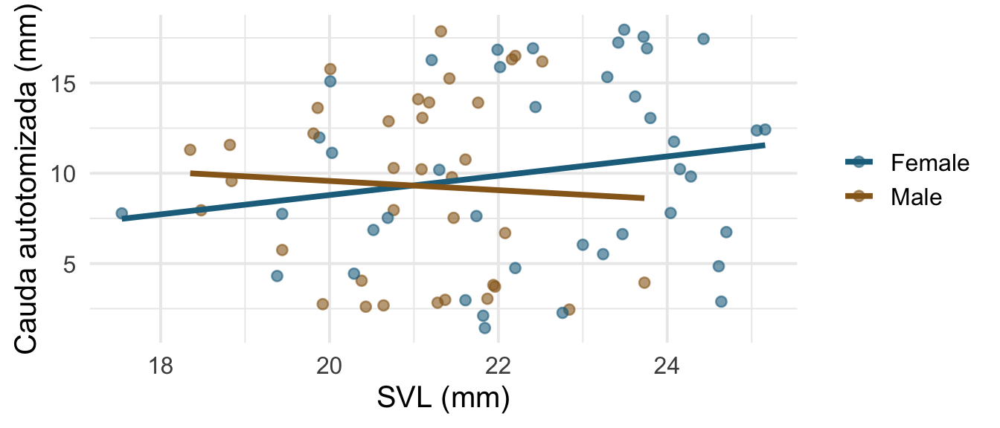

Encontro 3 · Análise de Dados Univariados · PPGBA/UFMS
22 de setembro de 2026
Continuamos na Análise. O que muda hoje vem inteiramente do Plano: quantos fatores, balanceado ou não, com ou sem covariável.
Ontem: teste t é lm(y ~ grupo) com uma coluna 0/1.
Hoje: mais colunas na mesma matriz. Nenhum conceito novo de inferência.
lm()emmeansVocês têm 223 lagartos Coleodactylus meridionalis, com sexo, comprimento rostro-cloacal (SVL) e comprimento da cauda regenerada após autotomia.
Pergunta: machos e fêmeas regeneram cauda de forma diferente?
Em grupos, 10 minutos:

Analysis of Variance Table
Response: body_mass_g
Df Sum Sq Mean Sq F value Pr(>F)
species 2 145190219 72595110 341.89 < 2.2e-16 ***
Residuals 330 70069447 212332
---
Signif. codes: 0 '***' 0.001 '**' 0.01 '*' 0.05 '.' 0.1 ' ' 1 Df Sum Sq Mean Sq F value Pr(>F)
species 2 145190219 72595110 341.9 <2e-16 ***
Residuals 330 70069447 212332
---
Signif. codes: 0 '***' 0.001 '**' 0.01 '*' 0.05 '.' 0.1 ' ' 1aov() é literalmente uma casca em volta de lm(). Mesmo F, mesmos graus de liberdade, mesmo p.
No Encontro 2 uma coluna 0/1 bastava, porque havia dois grupos. Com três, o R cria duas colunas:
| Espécie | speciesChinstrap |
speciesGentoo |
|---|---|---|
Adelie (referência) |
0 | 0 |
Chinstrap |
1 | 0 |
Gentoo |
0 | 1 |
A referência não ganha coluna própria. Ela é a linha de zeros — o caso que sobra quando todas as outras colunas valem 0.
Regra geral: \(k\) grupos, \(k-1\) colunas.
(Intercept) speciesChinstrap speciesGentoo
1 1 0 0
266 1 1 0
147 1 0 1A primeira coluna é só de 1: é o intercepto. As outras duas são a tabela do slide anterior, repetida uma vez por pinguim.
O modelo é \(\hat{y} = \beta_0 \cdot 1 + \beta_1 x_1 + \beta_2 x_2\). Basta pôr a linha de cada espécie no lugar de \(x_1\) e \(x_2\):
Adelie — linha \((1, 0, 0)\): \[\hat{y} = \beta_0 + \beta_1 \cdot 0 + \beta_2 \cdot 0 = \beta_0\]
Chinstrap — linha \((1, 1, 0)\): \[\hat{y} = \beta_0 + \beta_1\]
Gentoo — linha \((1, 0, 1)\): \[\hat{y} = \beta_0 + \beta_2\]
\(\beta_0\) é a média de Adelie. \(\beta_1\) e \(\beta_2\) são diferenças em relação a ela — nenhum dos dois é a média do próprio grupo.
(Intercept) speciesChinstrap speciesGentoo
3706.16438 26.92385 1386.27259 # A tibble: 3 × 3
species media diferenca_para_Adelie
<fct> <dbl> <dbl>
1 Adelie 3706. 0
2 Chinstrap 3733. 26.9
3 Gentoo 5092. 1386. O intercepto é 3706 g, que é a média de Adelie. O coeficiente de Gentoo é 1386 g, que é 5092 − 3706. Os mesmos números, nas duas tabelas.
E se déssemos uma coluna também para Adelie?
colunas posto
4 3 Quatro colunas, posto 3: uma delas é redundante. E dá para ver qual — as três colunas de espécie somam exatamente a coluna do intercepto, já que todo pinguim é de uma espécie e só uma.
Nesse caso o R não erra: ele descarta uma e devolve NA no coeficiente correspondente. Mas a escolha de qual descartar passa a ser dele, e não sua — e é por isso que existe a ideia de nível de referência.
\[ \underbrace{\sum (y_i - \bar{y})^2}_{\text{SQ total}} = \underbrace{\sum (\hat{y}_i - \bar{y})^2}_{\text{SQ do modelo}} + \underbrace{\sum (y_i - \hat{y}_i)^2}_{\text{SQ residual}} \]
total modelo residual
215259666 145190219 70069447 Compare com a coluna Sum Sq da tabela de ANOVA. São os mesmos números.
\[ F = \frac{\text{SQ do modelo} / \text{gl do modelo}} {\text{SQ residual} / \text{gl residual}} \]
Variância explicada por observação de modelo, dividida por variância não explicada por observação de resíduo. Se o modelo não explica nada, a razão flutua em torno de 1.
E \(R^2\) é simplesmente SQ do modelo / SQ total:
Com 3 grupos há 3 comparações; com 5 grupos, 10.
# A tibble: 7 × 3
grupos comparacoes `P(ao menos 1 falso positivo)`
<int> <dbl> <dbl>
1 2 1 0.05
2 3 3 0.14
3 4 6 0.26
4 5 10 0.4
5 6 15 0.54
6 7 21 0.66
7 8 28 0.76A ANOVA faz um teste. Quando ele indica diferença, aí sim vamos às comparações específicas — planejadas de preferência, e com correção.
Espécie e sexo afetam a massa. O efeito do sexo é o mesmo nas três espécies?

Retas não paralelas = interação.
Analysis of Variance Table
Model 1: body_mass_g ~ species + sex
Model 2: body_mass_g ~ species * sex
Res.Df RSS Df Sum of Sq F Pr(>F)
1 329 32979185
2 327 31302628 2 1676557 8.757 0.0001973 ***
---
Signif. codes: 0 '***' 0.001 '**' 0.01 '*' 0.05 '.' 0.1 ' ' 1species * sex é abreviação de species + sex + species:sex. O teste compara os dois modelos: vale a pena gastar 2 graus de liberdade com a interação?
[1] "(Intercept)" "speciesChinstrap"
[3] "speciesGentoo" "sexmale"
[5] "speciesChinstrap:sexmale" "speciesGentoo:sexmale" As duas últimas colunas são produtos das anteriores: valem 1 apenas para machos de Chinstrap e machos de Gentoo.
(Intercept) speciesChinstrap speciesGentoo
3368.8 158.4 1310.9
sexmale speciesChinstrap:sexmale speciesGentoo:sexmale
674.7 -262.9 130.4 Com contr.treatment, sexmale não é o efeito médio do sexo: é o efeito do sexo em Adelie, a referência. O efeito em Gentoo é sexmale + speciesGentoo:sexmale.
Foi por isso que o Encontro 2 insistiu em codificação de fatores.
Em ecologia, a interação costuma ser a pergunta, não um incômodo: o efeito da temperatura depende da altitude? O efeito do predador depende da densidade de refúgios?
Três regras práticas:
Spake et al. (2023) mostram que duas propriedades passam batidas quando se interpreta interação em ecologia. A segunda é a simetria do slide anterior. A primeira é mais incômoda: a escala de medida — nas palavras deles,
whether a response is analysed on an additive or multiplicative scale, such as a ratio or logarithmic scale.
A mesma relação pode ter interação na escala aditiva e não ter na multiplicativa, ou o contrário. Não é erro de análise: são perguntas diferentes. “A diferença entre tratamentos é a mesma?” e “a razão entre tratamentos é a mesma?” não são a mesma pergunta.
Guardem isto para o Encontro 4, quando a função de ligação entrar: um GLM com ligação log modela a escala multiplicativa por construção. A escolha da família decide, sem avisar, em que escala você está procurando interação.

Em B: riqueza de formigas contra cobertura de gramíneas exóticas, em dois níveis de uso da terra. À esquerda, escala aditiva — as linhas convergem, há interação. À direita, os mesmos dados em escala multiplicativa — ficam paralelas, não há.
Figura 4 de Spake, R. et al. 2023, Biological Reviews 98:983–1002, doi:10.1111/brv.12939. Reproduzida sob CC BY 4.0, sem alterações.
O artigo batiza os três modos de errar, e os nomes ajudam a lembrar:
| O que se erra | |
|---|---|
| Tipo D | a detecção e a magnitude — achar interação onde a escala a criou, ou não achar onde a escala a escondeu |
| Tipo S | o sinal da modificação do efeito |
| Tipo A | o processo por trás — atribuir a um mecanismo biológico o que é artefato de escala |
Eles mostram que meta-análise é especialmente vulnerável aos três, o que importa para quem for por esse caminho: razão de chances e diferença de médias padronizada vivem em escalas diferentes, e a mesma literatura pode dar respostas opostas sobre dependência de contexto conforme a métrica escolhida.
15 minutos.
Na volta: ANCOVA, e por que homogeneidade de inclinações é a ausência de uma interação.
Voltando aos lagartos: a cauda regenerada depende do tamanho do corpo. E o sexo?

(Intercept) SVL SexMale
3.13 0.31 -0.32 Duas retas paralelas: mesma inclinação em relação ao SVL, interceptos diferentes por sexo.
A célebre “premissa de homogeneidade das inclinações” da ANCOVA é exatamente isto: a ausência da interação SVL:Sex. Não é uma premissa misteriosa — é uma escolha de modelo, e ela é testável.
Analysis of Variance Table
Model 1: Autotomized_tail_length ~ SVL + Sex
Model 2: Autotomized_tail_length ~ SVL * Sex
Res.Df RSS Df Sum of Sq F Pr(>F)
1 74 1923.1
2 73 1899.5 1 23.583 0.9063 0.3442 (Intercept) SVL_c SexMale SVL_c:SexMale
9.74 0.53 -0.61 -0.79 Sem centrar, SexMale é a diferença entre sexos em SVL = 0 — um lagarto de tamanho zero. Centrando, passa a ser a diferença num lagarto de tamanho médio, que é a comparação que interessa.
Com interação no modelo, sempre centre a covariável antes de interpretar efeitos principais.
Com delineamento balanceado, os fatores são ortogonais e a ordem não importa. Com desbalanceado — que é o caso de quase todo dado de campo —, a variação compartilhada entre fatores precisa ser atribuída a alguém.
Df Sum Sq
species 2 145190219
flipper_length_mm 1 24226302
Residuals 329 45843144 Df Sum Sq
flipper_length_mm 1 164047703
species 2 5368818
Residuals 329 45843144A mesma dupla de preditoras, em ordem trocada, dá somas de quadrados diferentes. O tipo I atribui ao primeiro tudo o que é compartilhado.
Anova Table (Type II tests)
Response: body_mass_g
Sum Sq Df F value Pr(>F)
species 143401584 2 749.016 < 2.2e-16 ***
sex 37090262 1 387.460 < 2.2e-16 ***
species:sex 1676557 2 8.757 0.0001973 ***
Residuals 31302628 327
---
Signif. codes: 0 '***' 0.001 '**' 0.01 '*' 0.05 '.' 0.1 ' ' 1contr.sumAnova Table (Type III tests)
Response: body_mass_g
Sum Sq Df F value Pr(>F)
(Intercept) 5232595969 1 54661.83 < 2.2e-16 ***
species 143001222 2 746.92 < 2.2e-16 ***
sex 29851220 1 311.84 < 2.2e-16 ***
---
Signif. codes: 0 '***' 0.001 '**' 0.01 '*' 0.05 '.' 0.1 ' ' 1Rodar tipo III com o contr.treatment padrão do R produz um teste de efeito principal que não significa o que você pensa. É um dos erros mais comuns em artigos de ecologia.
| Situação | Tipo |
|---|---|
| Balanceado | tanto faz — dão o mesmo |
| Desbalanceado, sem interação relevante | II |
| Desbalanceado, interação é a pergunta | III, com contr.sum |
| Você quer ordem de entrada deliberada (hierárquica) | I, e diga isso no texto |
Sempre relate qual tipo usou. Sem isso, a tabela não é reproduzível.
emmeans: médias marginais estimadasspecies = Adelie:
sex emmean SE df lower.CL upper.CL
female 3369 36.2 327 3298 3440
male 4043 36.2 327 3972 4115
species = Chinstrap:
sex emmean SE df lower.CL upper.CL
female 3527 53.1 327 3423 3632
male 3939 53.1 327 3835 4043
species = Gentoo:
sex emmean SE df lower.CL upper.CL
female 4680 40.6 327 4600 4760
male 5485 39.6 327 5407 5563
Confidence level used: 0.95 Médias ajustadas pelo modelo — não as médias brutas dos grupos.
species = Adelie:
contrast estimate SE df t.ratio p.value
female - male -675 51.2 327 -13.174 <0.0001
species = Chinstrap:
contrast estimate SE df t.ratio p.value
female - male -412 75.0 327 -5.487 <0.0001
species = Gentoo:
contrast estimate SE df t.ratio p.value
female - male -805 56.7 327 -14.188 <0.0001Aqui cada comparação é uma pergunta biológica específica: dimorfismo sexual dentro de cada espécie.
Planejada: você sabia, antes de coletar, quais comparações interessavam. Poucas, e mais poderosas.
Post-hoc: você olhou os dados e decidiu o que comparar. Todas contra todas, com correção mais severa.
contrast estimate SE df t.ratio p.value
Adelie - Chinstrap -26.9 67.7 330 -0.398 0.9164
Adelie - Gentoo -1386.3 56.9 330 -24.359 <0.0001
Chinstrap - Gentoo -1359.3 70.0 330 -19.406 <0.0001
P value adjustment: tukey method for comparing a family of 3 estimates Nenhuma correção conserta o problema de ter decidido as comparações depois de ver os dados. Isso é conteúdo do Encontro 1.
Seguindo Davis & Kay (2023):
emmeans”.Uma tabela de ANOVA sozinha não responde à pergunta biológica. Ela diz “há diferença”; o leitor quer saber qual e de quanto.
Relate sempre: a estimativa da diferença, com unidade e intervalo.
lm() com mais colunas — e aov() é uma casca.contr.sum.anova().car::Anova() nos tipos II e III e explique qualquer diferença.emmeans para a comparação que interessa à sua pergunta — só ela.Leitura: Agresti (2015), cap. 4.
À tarde: saímos do mundo gaussiano. Que processo gerou os seus dados?
emmeans: estimated marginal means.Análise de Dados Univariados · PPGBA/UFMS · 2026/2